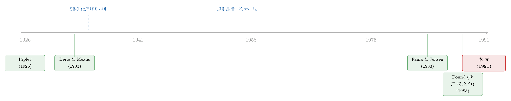

被「保护」起来的沉默：一部 1956 年的证券法，如何亲手掐灭了股东的声音
本文读的是 Pound (1991, Journal of Financial Economics)：美国证监会 (SEC) 自 1935 年起监管代理投票，初衷是「保护投资者」——让每个小股东都能被准确告知、公平投票。可这套规则一路演化，到 1956 年竟变成「任何人想跟股东谈论一个投票议题，都得先在 SEC 注册、满足一大堆披露要求、并把每一份拟发出的沟通材料交给 SEC 事先审查」。Pound 用历史证据论证：正是这套以「保护」为名的框架，系统性地抬高了股东之间沟通与联合行动的成本，从而抑制了股东主动监督、扼杀了一个本可以为投票议题提供信息的私人市场。投资者保护与市场效率，在这里第一次被摆上了同一架天平的两端。
1 一个看似无可指摘的初衷
先说一件听起来天经地义的事。
公司是股东的。股东通过投票选董事、改章程、批准并购与清算——投票，是股东对公司行使最终控制权的根本机制。那么，让每一个股东都能「被准确告知、公平投票、不受操纵」，难道不正是监管该做的事吗？这正是 1934 年《证券交易法》授权 SEC 监管代理投票时的官方说辞：确保投资者被如实告知，确保投票公平、诚实、免于被征集方操纵——一句话，培育真正的公司民主。
听上去无懈可击。可这篇论文真正想讲的，恰恰是这个无懈可击的初衷，如何一步步走到了自己的反面。
Pound 给这套监管哲学起了个名字：投资者保护 (investor protection)。它的对立面，他称之为市场效率 (market efficiency)——也就是市场自身为了缓解股东监督难题，会自发演化出的那套成本最小化 (cost-minimization) 的解决方案。这两者，本文将反复证明，常常是水火不容的。
2 真正的难题：股东为什么集体沉默
要理解这场冲突，得先回到一个古老的观察。
早在 1859 年，《纽约时报》的一篇社论就抱怨过：「如果广大股东肯坚持出席会议、查阅账簿、追问交易、并在选举中投票，一种有益的制衡就会建立起来，一场亟需的改革也就完成了。」——可问题是，他们就是不肯。
这就是股东冷漠 (shareholder apathy)。传统上，人们把它归因于 Berle 和 Means (1933) 所说的所有权与控制权分离 (separation of ownership and control)：股权太分散了，于是没人在乎。但 Pound 在这里走了关键的一步——他说，分散只是表象，更根本的原因是信息搜集、沟通与协调行动的成本。
为什么这么说？因为单个股东陷在一场囚徒困境 (prisoner's dilemma) 里：如果我行动而别人不动，我白费力气、结果照样糟糕；如果多数人会行动，那我搭便车、一分钱不花最划算。于是在均衡里，所有人本来联合起来都会更好，可作为个体，每个人都选择保持无知。
接着，一个自然的推论出现了：既然病根在「成本」，那么任何能降低沟通与协调成本的技术、制度或监管变化，都会缓解这个集体行动难题；反过来，任何抬高这些成本的东西，必然让难题恶化。Pound 写得很直白——哪怕股权再分散，只要技术让无数投资者能近乎零成本地沟通和组织，集体行动问题就会消失，因为任何管理层的劣行都会立刻给个体股东创造行动的激励。
市场自己其实早就发明了一整套「降成本」的解药，按「被动 → 主动」排成一列：
- 私人信息市场：企业家把信息搜集的固定成本集中起来，再低价转售分析——这是最被动的解。
- 投票信托 (voting trust)：股东用明确契约把投票权委托给某个能承担监督成本、也能享受监督收益的人。
- 代理权之争 (proxy contest)：一个大股东自掏腰包去告诉其他股东「公司战略错在哪」，指望用自己的替代方案获利。
- 收购 (takeover)：最不被动的解——外部人买下公司、改善业绩来获利，光是这种可能性就足以威慑管理层。
记住这张「解药清单」。本文接下来的全部张力，都来自一件事：SEC 的规则，几乎把这张清单上的每一味药都加了价。
3 三股力量，拧成一个监管愿景
那么，规则为什么会朝着抬高成本的方向演化？Pound 用了大量历史材料来回答。他指出，20 世纪初的改革浪潮里有三股情绪，被 1929 年的大崩盘和大萧条点燃，最终铸成了代理规则：
第一，对管理层的怀疑。 从 19 世纪中叶的托拉斯浪潮开始，公众就警惕大公司的权力。1901 年《纽约时报》甚至担心强大的美国钢铁公司会「把参议院变成自己董事会的一个委员会」。到 1930 年代，Berle 和 Means (1933) 把「所有权与控制权分离」写成了时代主题——财富被集中成巨大的聚合体，而对这些财富的控制权，被交给了「工业的王侯们」。
第二，披露运动 (the disclosure movement)。 哈佛经济学家 William Ripley 在《Main Street and Wall Street》(1926) 里大声疾呼：既然「公司化是一种特权」，股东、公众和国家就「有权获得充分的信息」。
第三，对金融市场的不信任。 SEC 第二任主席 William O. Douglas (1940) 写道，在金融家眼里，「企业变成了一张张纸——股票、债券、票据、债券的杂凑」，高级金融的特征之一就是「它的不近人情，它对社会与人性价值的漠视」。
这三股力量合流，催生出一个本质上是民粹主义 (populist) 的愿景：通过代理监管，政府要确保所有投资者都能有效行使投票权，从而同时制衡管理层和大外部投资者的权力。它要求两类干预——充分、无偏、准确的强制披露，以及对投票程序本身的改造（保护每个人的投票权、给足时间、提供股东提案的舞台）。
但真正关键的一步在于：这个愿景从骨子里就敌视成本最小化。一个让所有投票参与者都「充分、无偏披露」的政策，必然抬高想发起行动的个体股东的成本，还可能顺手损害私人信息市场；而给投票程序套上僵硬的结构，必然排斥那些基于正式或非正式契约的替代性监督机制。更微妙的是，监管者对市场化方案有种本能的疑虑：
- 市场方案可能依赖一个大股东去施压管理层——在保护派看来，这是「不当影响」和对平等代表的颠覆；
- 市场方案可能绕过那些信息成本太高的小投资者——在改革模型里，这叫「剥夺投票权 (disenfranchisement)」；
- 市场方案可能依赖侧面付款 (side payments) 来激励监督——改革者视之为近乎卖票甚至勒索；
- 市场方案可能要求速度与保密（如收购）——而投资者保护愿景偏爱秩序、可预测和「阳光」，速度与保密在他们眼里就是暗箱与腐败的气味。
于是冲突在每一处都浮现了。
4 一场 1933 年的听证会，把矛盾摆上了桌
如果上面这些还太抽象，Pound 找到了一个绝佳的切片：1934 年《证券交易法》立法时，参议院银行委员会专门就代理投票举行的听证会，焦点是一家纽交所上市公司——美国商业酒精公司 (American Commercial Alcohol Corp.) 在 1933 年 7 月开的一次特别股东会。委员会顾问 Pecora 先生连珠炮般发问，三个关切跃然纸上：
其一，「一揽子追认 (blanket ratification)」。 公司请股东对管理层过去十二个月的所有行为一并批准。委员会问董事长：你们为什么觉得有必要让股东「对公司高管和董事所做的一切行为和交易给予空白批准」？
其二，披露不足。 Pecora 追问：通知里根本没说明那些「待追认的行为」究竟是什么，你为什么不让股东在「充分知情」的情况下明智地批准？
其三，无人到场。 最戏剧性的一段对话——会上一个股东本人都没到，主持人和记录员都是巴尔的摩那家信托公司的雇员。Pecora 总结道：所以这场股东会的「组织者」，不过是一群「傀儡 (dummies)」？
这三件事——一揽子追认、披露缺失、无人出席——恰好把投资者保护议程的全部直觉怀疑，以及它与成本最小化的冲突，浓缩到了一起。因为 Pound 立刻反手指出：在成本最小化的视角下，这三种「滥用」每一个都可以是高效的解。一揽子追认是当年州公司责任法和商业判断规则尚不完善时，用来限制董事责任的常规省钱做法；而对「无人到场」的惊讶，恰恰忽略了一个市场的存在——人们之所以不来，是因为他们理性地把投票权交给了别人，或者干脆搭便车。
同一组事实，两种读法。这正是全文的核心张力：你眼中的「滥用」，可能是别人眼中的「效率」。
5 文献脉络：从报纸社论到代理权经济学
把镜头拉远，这篇论文坐落在一条相当长的脉络上。
最早的「文献」其实是报纸——1859、1868、1880、1901 年的《纽约时报》社论，James Ayer (1863) 的小册子，一遍遍重复着对大公司、对华尔街、对股东冷漠的忧虑。这些情绪在 Ripley (1926) 那里被锻造成具体的改革主张，又被 Berle 和 Means (1933) 提炼为「所有权与控制权分离」这一经典命题，直接喂养了 SEC 的诞生。

到了现代，公司投票被重新放进代理理论 (agency theory) 的框架来理解。Fama 和 Jensen (1983) 论证公司控制权会向剩余索取者迁移——平时是股东，困境时则转向债权人；Easterbrook 和 Fischel (1983) 对公司法中的投票做了类似分析。Clark (1986) 对集体行动难题给出了优雅的讨论。而 Pound 本人在 1988 年的另一篇 JFE 论文里，已经实证检验过代理权之争与股东监督的效率。这篇 1991 年的论文，是他把视角从「代理权之争本身」抬高到「监管框架如何塑造了整个代理市场」的一次延伸——它不再问「股东监督有没有用」，而是问「监管究竟是在帮股东监督，还是在拦着他们」。
（顺着这条线，本博客里有不少同源的文章：实证层面，可参见《一场被「外人」点燃的股东起义：1989 年霍尼韦尔的代理权之争》；散户在代理流程里的真实参与，见《散户其实在「投票」，只是我们一直假设他们不在乎》；投票权与现金流权被拆开来卖的极端情形，见《投错票的人，反而把治理变好了？——给"空洞投票"算一笔效率账》；而把证券法的政治起源讲透的一篇，见《「操纵」从来没被证明：一部证券法的政治起源》。）
6 反转：一套「保护你」的规则，如何让你闭嘴
现在到了全文的落点。
规则的演化轨迹是清晰的：1935 年，它只是一份简单的强制披露清单，外加一条禁止虚假陈述的反欺诈条款——很温和。可到了 1956 年（规则最后一次大扩张），任何市场参与者只要想就一个投票议题与股东沟通，就必须先向 SEC 注册，满足一整套披露要求，并把每一份拟发出的沟通材料提交 SEC 事先审查。Pound 用了一个很重的词来形容这种事先审查：本质上是审查制 (censored)。
不止如此。原先那条反欺诈条款也被改写了——它的新作用，是威慑那些曾经是代理权之争核心的、有争议的、精巧的分析性信息的传播，转而鼓励过度提供非分析性的、事实性的背景材料。换句话说，规则在悄悄地把「有锋芒的观点」赶出去，把「无害的废话」请进来。再加上对征集方式的种种限制，一些异见投资者曾广泛使用的拉票做法，事实上被取缔了。
于是反转完成了。这套以「保护小投资者免受管理层或激进异见者操纵」为名设计的框架，其累积效果是：给任何想监督管理层、推动公司变革的人，都压上了沉重的成本和程序障碍。股东和其他私人市场中介从监督中能得到的回报变少了。规则不仅没解决集体行动难题，反而加剧了它——它把股东推向更深的孤立，削弱了沟通与联合行动的激励。
那张「解药清单」上的每一味药，都被这套规则加了价。这就是 Pound 这篇文章最尖锐的论断：当政府以「保护」之名介入投票，它保护的或许不是股东的利益，而是股东的沉默。
值得一提的是，Pound 写作之时（1991 年），机构投资者的崛起正在改变代理规则的政治经济学；论文第 9 节也讨论了 SEC 当时刚宣布的、旨在改革部分规则的提案——历史并未停在 1956 年。但这恰恰印证了他的核心命题：规则的松紧，始终是降低还是抬高沟通成本的问题。
7 评论与延伸（Q&A + 研究方向）
(a) 几个可能的疑问
Q：这篇文章到底是「实证」还是「历史叙事」？它的证据可信吗？
它是一篇制度史与分析叙事的结合，没有回归、没有系数。证据是定性的：法规演化的时间线、国会听证记录、当时的报刊与学术文献。它的说服力来自论证的内在一致性和史料的丰富，而非统计识别。读者该把它当成一个理论框架 + 历史佐证，而不是一个因果估计——这也正是它最大的软肋（见下）。
Q：「投资者保护」和「市场效率」真的非此即彼吗？现代文献不是说投资者保护越好、市场越发达吗？
这是个关键的张力点。La Porta 等人后来的「法与金融」文献确实论证投资者保护促进市场发展。但 Pound 这里的「投资者保护」有特定含义——它指的是强制所有人充分无偏披露 + 僵硬的程序公平，而非「防止大股东掏空小股东」。在他的语境里，过度的程序保护抬高了沟通成本，与市场自发的成本最小化方案冲突。两套文献其实在谈两件不同的事。
Q：如果规则真的那么糟，为什么代理权之争和股东行动主义后来还是发生了（比如 1980 年代）？
Pound 没有说股东行动主义被完全消灭，而是说它被系统性地抬高了成本、因而被抑制。1980 年代的兴起，部分正是因为机构持股集中度上升（单个机构持股变大，搭便车问题减轻）和后续的规则松动——这反过来支持了他的「成本决定论」：当成本下降，行动就回来了。
Q：把「无人出席股东会」「一揽子追认」说成「高效」，是不是在为管理层的滥用洗地？
这是全文最容易引起反感的地方。Pound 的论点是反事实的警惕：这些做法在成本最小化视角下「可以」是高效的，不等于它们「一定」无害。他想戳破的是「凡是看起来不民主的就是滥用」这种直觉。但他确实低估了——当披露缺失与控制权私利结合时，「省成本」和「掏空」在外观上难以区分。
Q：这篇文章对今天还有意义吗？毕竟规则又改了很多次。
意义在于它提供了一个永不过时的分析透镜：任何代理/披露监管，都要同时看它对「信息准确性」的提升和对「沟通成本」的抬高。今天关于代理顾问 (proxy advisors)、14a-8 股东提案门槛、通用代理卡 (universal proxy) 的每一轮争论，本质上都还是 Pound 那架天平的两端。
Q：它和 Pound 自己 1988 年那篇有什么区别？
1988 年那篇是实证的，检验代理权之争作为监督机制的效率（结果偏悲观，管理层往往赢）。1991 年这篇把因果链往前推了一步：为什么代理权之争效率不高？因为监管框架本身在拖后腿。 前者诊断症状，后者追问病因。
(b) 几个可能的研究问题与提案
1. 把「沟通成本」量化：规则变动的事件研究
【经济故事】Pound 的核心命题是「规则抬高了沟通成本、抑制了股东行动」，但他没量化。每一次代理规则的重大修订（1992 年 SEC 放松股东间沟通限制、2010 年代的若干改革）都是一次准自然实验。
【可行性】中。可用代理权之争频率、股东提案数量、机构投票分歧度作为结果变量，以规则修订日为冲击做双重差分。数据（ISS、SharkRepellent、SEC EDGAR）可得；难点在于规则变动往往伴随其他治理趋势，平行趋势假设要小心论证。
2. 私人信息市场是否真的被「挤出」了？代理顾问的兴起作为反证
【经济故事】Pound 说严格的披露与反欺诈规则扼杀了「为投票议题提供分析的私人信息市场」。可 ISS、Glass Lewis 这样的代理顾问后来恰恰填补了这个空白。它们的崛起，是规则松动的结果，还是市场绕开规则的产物？
【可行性】中高。可考察代理顾问覆盖范围扩张与规则放松时点的关系，以及它们的建议对投票结果的边际影响。数据丰富，但「私人信息市场」的度量需要创造性代理变量。
3. 跨国比较：沟通成本与股东行动主义的强度
【经济故事】如果 Pound 对，那么代理沟通规则更宽松的国家，应当有更活跃的股东行动主义和更低的代理成本。这是把他的「成本决定论」搬上国际舞台的直接检验。
【可行性】中。需构建各国代理沟通/披露规则严格度的指数（类似 La Porta 投资者保护指数，但维度不同），再与行动主义活动、控制权私利溢价（可借鉴大宗股权交易折溢价）对照。数据搜集成本高，但识别逻辑干净。
4. 外资持有人视角：沟通成本如何影响跨境股东监督
【经济故事】外国机构投资者面对的代理沟通成本（语言、时区、法律、注册要求）天然更高。按 Pound 的逻辑，他们应当更被动、更倾向「用脚投票」而非「用手投票」。这把代理成本难题接到了外资持有人与公司治理的前沿。
【可行性】高。可用各国外资持股、跨境投票参与率（机构投票数据库如 ISS Voting Analytics）检验外资是否系统性地更少投反对票、更多卖出而非介入。与本博客《用脚投票：被炒掉的 CEO 背后，是谁先悄悄离场》的「exit vs. voice」框架天然衔接。
8 参考文献与我的判断
我的判断。 这篇论文的贡献是框架性的：它第一次把代理监管干净地拆成「投资者保护 vs. 市场效率」两极，并用一条「成本决定集体行动」的逻辑串起了从 1935 到 1956 的全部制度演化。它最漂亮的一招，是把「无人出席股东会」这类被本能谴责的现象，重新解读为成本最小化的均衡——这种「换个视角看滥用」的训练，对任何研究公司治理的人都极有价值。
对识别的担忧。 但它的代价也明显：全文没有一个可证伪的量化检验。「规则抬高了成本因而抑制了行动」是个极有说服力的故事，可它和「股东行动本来就因为别的原因（集中度、税法、商业判断规则）而稀少」难以区分。Pound 提供了机制，却没提供反事实。更深一层，他对「成本最小化即高效」的信念，本身带着强烈的先验——当披露缺失同时也是大股东掏空小股东的工具时，他的框架会系统性地低估保护的价值。
后续想看到什么。 我最想看到的，是把这套定性框架接上现代数据：用规则修订做事件研究，量出「一份事先审查」到底给股东沟通加了多少成本、又压下了多少次本该发生的代理权之争。如果那个数字是大的，Pound 就赢了；如果是小的，那么真正让股东沉默的，恐怕另有其人。
参考文献
Berle, Adolph and Gardner Means (1933). The Modern Corporation and Private Property. Macmillan, New York, NY.
Clark, Robert (1986). Corporate Law. Little, Brown, and Co., Boston, MA.
DeAngelo, Harry and Linda DeAngelo (1989). Proxy contests and the governance of publicly held corporations. Journal of Financial Economics 23, 29–59.
Douglas, William (1940). Democracy and Finance. Yale University Press, New Haven, CT.
Easterbrook, Frank and Daniel Fischel (1983). Voting in corporate law. Journal of Law and Economics 26, 395–427.
Fama, Eugene and Michael Jensen (1983). Agency problems and residual claims. Journal of Law and Economics 26, 327–349.
Loss, Louis (1988). Fundamentals of Securities Regulation, 2nd ed. Little, Brown, and Co., Boston, MA.
Pound, John (1988). Proxy contests and the efficiency of shareholder oversight. Journal of Financial Economics 20, 237–265.
Pound, John (1991). Proxy voting and the SEC: Investor protection versus market efficiency. Journal of Financial Economics 29, 241–255.
Ripley, William (1926). Main Street and Wall Street. Little, Brown, and Co., Boston, MA.